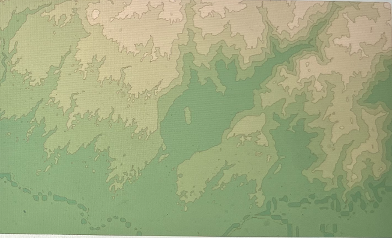

Overview
In this project, I wrote a script to separate contour maps into exportable layers. To achieve this, I first found a contour map generator that created a depth-based coloring of the contours of a map. Then, I separated this single image into a variable number of images, all split up by their RGB value - I stored masks of these separated layers. Assuming that the layers with smaller areas (small islands, etc) would be layered on top, I sorted the masks by the area that the mask covered in the image in order to ensure I'd be able to visualize each layer when testing the masking. Then, I ran the flood fill algorithm to fill holes in each of the masks due to other topographic layers covering it. After doing this, I was able to generate a set of layers! Along the way, I did a bit of image processing magic to tie it all together. I built this because I noticed my sister spending hours tracing outlines of maps to make contour map art, and I thought it might be possible to apply some of the vision techniques I learned in class to make this process more efficient for her!
Original Image
Final output (split into 9 layers)

Layers on top of each other:
Find the code here